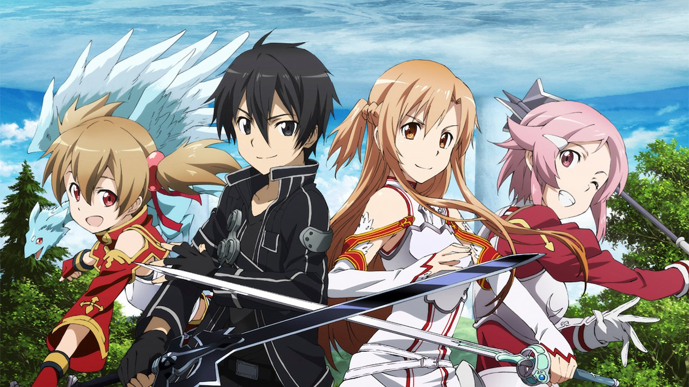

No Game, No Life

No Game, No Life se centra en Sora y Shiro, unos hermanos cuya reputación de NEETs hikikomoris y gamers han hecho que comiencen a extenderse leyendas urbanas suyas por todo internet.
Estos dos gamers consideran que el mundo real no es más que “un juego de mierda”. Un día, un chico llamado “Dios” les invoca en un mundo alternativo. En este mundo, Dios ha prohibido la guerra y declarado que todo se decide en base a los juegos, incluso las fronteras de los países. La humanidad vive ahora en una ciudad por culpa del resto de razas. ¿Se convertirán Sora y Shiro, hermano y hermana, en los salvadores de este mundo alternativo?
Ver anime
Overlord
Ha llegado la hora final del popular juego de realidad virtual Yggdrasil. Sin embargo, Momonga, un poderoso mago y maestro del gremio oscuro Ainz Ooal Gown, decide pasar sus últimos momentos en el juego cuando los servidores comienzan a cerrarse. Para su sorpresa, a pesar de que el reloj dio la medianoche, Momonga sigue siendo plenamente consciente de su personaje y, además, ¡los personajes que no son jugadores parecen haber desarrollado personalidades propias!
Frente a esta situación anormal, Momonga ordena a sus leales sirvientes que lo ayuden a investigar y tomar el control de este nuevo mundo, con la esperanza de descubrir qué ha causado este desarrollo y si puede haber otros en la misma situación.
Ver anime
Youjo Senki
Tanya Degurechaff es una joven soldado infame por su crueldad y una aptitud táctica misteriosa que le valió el sobrenombre de "Demonio del Rin". Debajo de su aspecto de niña e inocuo oculta una verdadera personalidad rígida, inteligente y mordaz, sin embargo, yace el alma de un hombre que desafió al Ser X, el autoproclamado Dios, a una batalla de ingenio y de fe, que resultó en que se reencarnó como una niña en otra época de otro mundo, en el cual existe la magia y un ambiente de guerra inevitable. Respirando en desafío, Tanya comienza ascender en las filas del ejército de su país mientras se sumerge lentamente en la guerra mundial que el nuevo mundo sufre, con solo el ser X demostrando ser el obstáculo más fuerte en la recreación de la vida pacífica que una vez conoció. Pero sus acciones perceptivas e iniciativas de combate tienen un efecto colateral involuntario: impulsar al poderoso Imperio a convertirse en una de las naciones más poderosas en la historia de la humanidad.
Ver anime
Sword Art Online

Es el año 2022, y se esta lanzando al mercado un nuevo videojuego, que se va a jugar a través del sistema online, y en formato de realidad virtual, el cual tiene por nombre Sword Art Online (SAO). El mismo se usa a través de un casco que tiene por nombre NerveGear, con el cual los cinco sentidos del jugador comienzan a ser estimulados, y los jugadores podrán sentir y experimentar lo que están haciendo los personajes del juego a través de sus mentes.
El creador de este juego se llama Akihito Kayaba. Para el día 6 de noviembre mas de 10 mil jugadores están entrando a este juego a través de ciberespacio, y al ver que no pueden salirse del mismo, su creador Akihito Kayaba, les notifica a los jugadores que deben terminar el juego y vencer los 100 pisos de Aincrad.
Ver anime